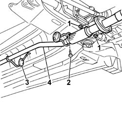
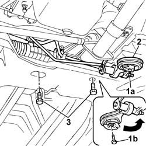
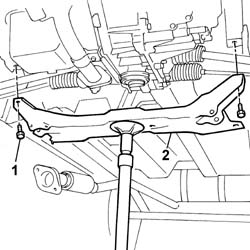

4410D14 front suspension crossbeam - r+r with wishbones removed
- Path
- Procedures > 44 SUSPENSION AND WHEELS > 4410 FRONT SUSPENSION > 4410D frame and cross beam > 4410D14 front suspension crossbeam - r+r with wishbones removed
- Kind
- repair procedure (removal / refitting; the operation number is the code)
- Applies to
- all engines; all production periods
- Interactive page
- https://sloeber94.github.io/elrnDB-fDbl/en/#/2584746
Applies to: all engines; all production periods
 Removing
Removing
 Refitting
Refitting1. Remove the nuts securing the first section of the exhaust pipe to the rear section.
2. Undo the bolt securing the exhaust pipe flexible block support bracket.
3. Disconnect the flexible block supporting the rear section of the exhaust pipe.
4. Lower the rear section of the exhaust pipe and secure to the car using a rope.

Applies to: all engines; all production periods
1. Loosen nut (1a) and unscrew bolt (1b) securing the central reaction link.
2. Turn the central link so that it is outside the working area.
3. Undo the bolts securing the power assisted steering box to the front beam.

Applies to: all engines; all production periods
Prepare a hydraulic jack under the front beam.
1. Undo the side bolts securing the beam to the body.
2. Lower the hydraulic jack and remove the front beam.

Applies to: all engines; all production periods
Refitting
Removing.
Position the beam on the hydraulic column jack. Position the beam on the hydraulic column jack.
Raise the jack and offer the crossmember up to the attachments on the bodyshell.
Screw in the side bolts securing the beam to the body and tighten (firstly position the fastening on the timing side).
 | Fastening | Component | Ø | Value (daNm) |
|---|---|---|---|---|
- | - | - | - | - |
Secure the steering box to the front beam and tighten the retaining bolts.
| Fastening | Component | Ø | Value (daNm) |
|---|---|---|---|---|
- | Nut | POWER STEERING BOX | M12 x 1.25 | 8.8 |
Refit the central power unit link and tighten the central botl and retaining nut to torque.
| Fastening | Component | Ø | Value (daNm) |
|---|---|---|---|---|
- | Nut | REACTION ROD | M12 x 1.25 | 8 |
| Fastening | Component | Ø | Value (daNm) |
|---|---|---|---|---|
- | Bolt | REACTION ROD | M12 x 1.25 | 12 |
Fasten the rear exhasut pipe section to the flexible block.
Connect the first exhaust pipe section.
Secure the first exhaust pipe section to the support bracket on the front beam.
| Fastening | Component | Ø | Value (daNm) |
|---|---|---|---|---|
- | Bolt | EXHAUST PIPE MOUNTS/FASTENERS | M8 | (on crossmember) 2.8 |